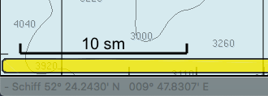

Skalierung der Karten
Die aktuelle Skalierung der Karte wird nicht mehr wie in älteren Versionen unten rechts auf der Statuszeile angezeigt, sondern ab V5.0 in dieser neuen Leiste:
Mit Klick auf den Kartenmaßstab öffnet sich ein Fenster zum Einstellen des Maßstabs:
Auch der senkrechte Skalierungsbalken älterer Versionen wurde ersetzt durch diese Anzeige unten links:

Alte Skalierungsanzeigen
Ist der Indikator grau und orange, ist die gesamte Länge 1 Seemeile und jedes Segment hat eine Kabellänge (Zehntel-Seemeile).
Ist der Indikator grau und Schwarz, ist die gesamte Länge 10 Seemeilen und jedes Segment hat 2 Seemeilen.